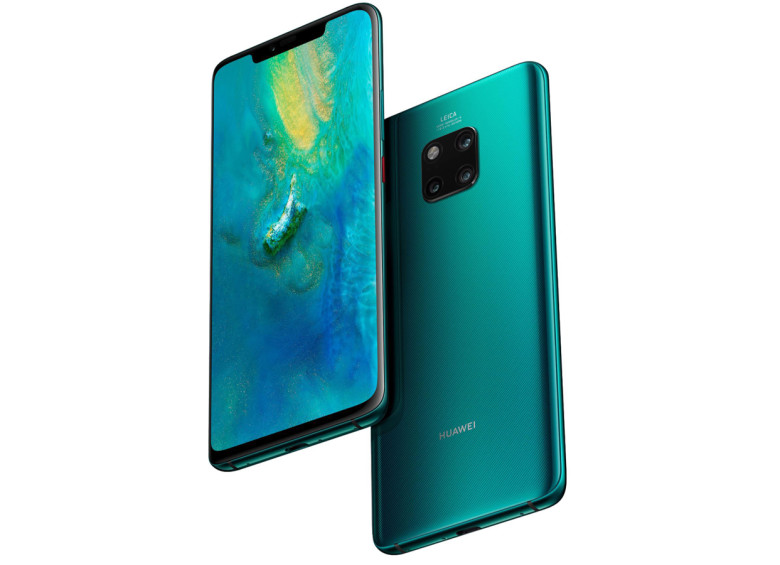
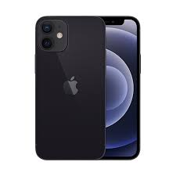

Con el nuevo equipo de Samsung, por primera vez en la industria la cámara trasera de un teléfono inteligente graba en HDR10+. ¿Qué significa eso? Es una tecnología de calidad de imagen que busca que lo que se ve en pantalla o se grabe sea más parecido a lo real. Además, la inclusión de esa especificación en el equipo le permite que en el contenido se noten los detalles, una gama de colores más amplia, especialmente en escenas que muestran fuertes contrastes entre lo claro y lo oscuro.

Se incluye un cable de carga rápida de USB-C a Lightning compatible con puertos de computadora y adaptadores de corriente USB-C. Te recomendamos usar los cables de USB-A a Lightning, adaptadores de corriente y audífonos que ya tengas y que sean compatibles con este modelo de iPhone.
p>